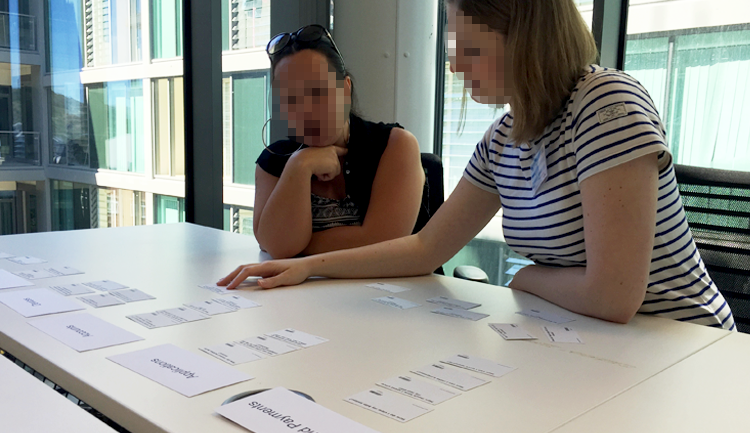
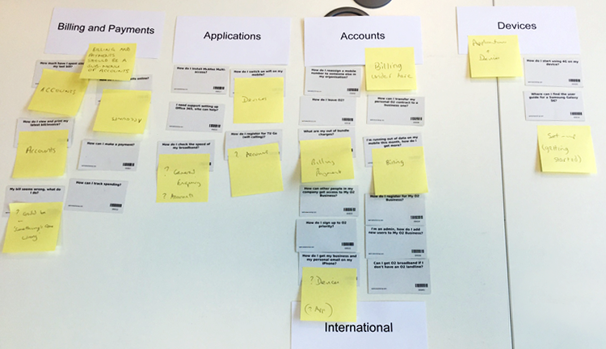
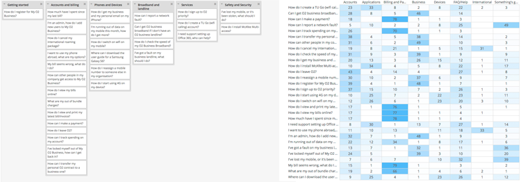

O2 wanted to see a 20% reduction in enquiries to their call centre, by handling more help requests through their website. They wanted to take a user centered approach to inform the redesign of the business help and support section of their customer facing website.
I partnered with a team of UX designers, product owners, and copywriters at O2 HQ in Slough, to collaboratively develop the new site. I supported a series of workshops across London and Slough with business owners of each product area, to understand their needs and objectives. An audit of the existing site highlighted over 800 separate pieces of content, and identified where this was redundant, out-of-date, or trivial. I worked with the copywriter to produce new or updated content for each section.


A remote card sort was conducted to inform a new information architecture. A sample of 239 participants were recruited though UX consultancy Bunnyfoot, from user groups identified through seven personas. Both open and closed card sorts were conducted remotely, and a subsequent series of face-to-face card sorts facilitated with the client present in our Sheffield offices, validated the results.

A new information architecture for the site was built based on outcomes from the testing, and agreed with business and product owners. A series of templates based on the new IA were built by a team of in-house developers, and a new interface was developed. The updated content was applied, and the site went live to schedule. Calls to the helpline decreased by over 20% making cost savings for O2/Telefónica and improving self-service for their business customers
Client: O2/Telefónica
Date: June 2015
Tag: user research, IA